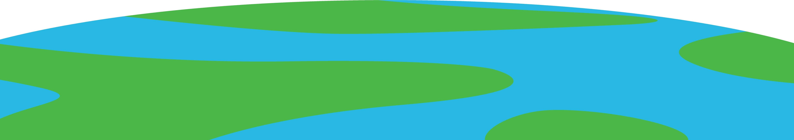

Thanks for joining me on this space race. Feel free to download the set and donate to help fund further missions and develop the icon space program!
Neptune
The atmosphere of Neptune is made of hydrogen and helium,
with some methane. The methane absorbs red light, which
makes the planet appear a lovely blue. High, thin clouds
drift in the upper atmosphere.
with some methane. The methane absorbs red light, which
makes the planet appear a lovely blue. High, thin clouds
drift in the upper atmosphere.
Uranus
 Uranus makes one trip around the Sun every 84 Earth years. During some parts
Uranus makes one trip around the Sun every 84 Earth years. During some parts
of its orbit one or the other of its poles point directly at the Sun and
get about 42 years of direct sunlight. The rest of the time they are in darkness.
Saturn
 Though Saturn’s rings weren’t discovered until the 1600s, some scholars theorize
Though Saturn’s rings weren’t discovered until the 1600s, some scholars theorize
ancient cultures may have known about them. For example, the Maori in New
Zealand have historically referred to Saturn as Parearau, an ancient name
that means “surrounded by a headband
Jupiter
 The Great Red Spot is a huge storm on Jupiter. It has
The Great Red Spot is a huge storm on Jupiter. It has
raged for at least 350 years. It is so large that
three Earths could fit inside it.
Mercury
 Despite being the closest planet to the Sun, Mercury
Despite being the closest planet to the Sun, Mercury
is not the warmest. Venus is warmer. In fact, Mercury
can be one of the coldest planets in the Solar System
Venus
 A day on Venus lasts 243 Earth days (that's how long it takes Venus to make one rotation),
A day on Venus lasts 243 Earth days (that's how long it takes Venus to make one rotation),
while a year on Venus (its revolution period around the sun) is shorter, at just 224.7
Earth days. If that's just one day, think about what a work week would be like!
Mars
 On Mars you'd experience 62.5% less gravity
On Mars you'd experience 62.5% less gravity
than you’re used to on Earth, so if you weighed
100lbs on Earth, you would weigh only 38lbs on Mars
Prepare to enter our solar system and meet the aliens that inhabit each of our planets. Put on your spacesuit and hold your breath, there's no oxygen where we're going. My icons will quite literally take your breath away!

The Great Icon Space Race
